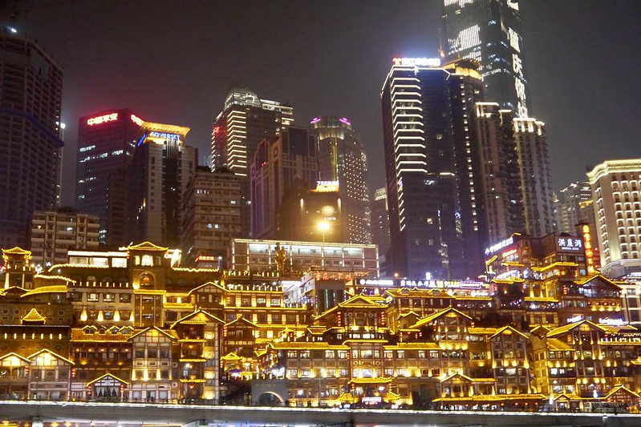
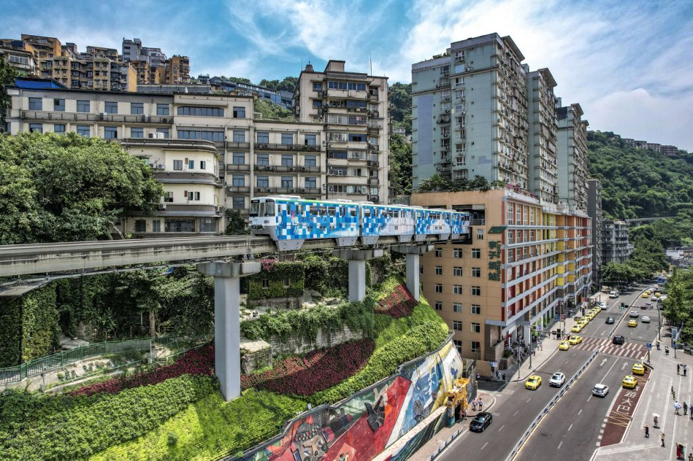
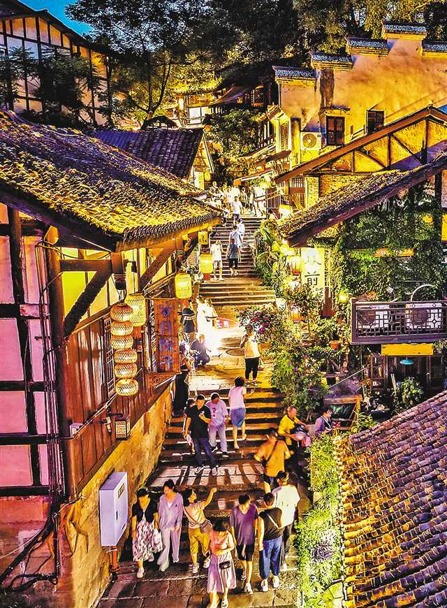
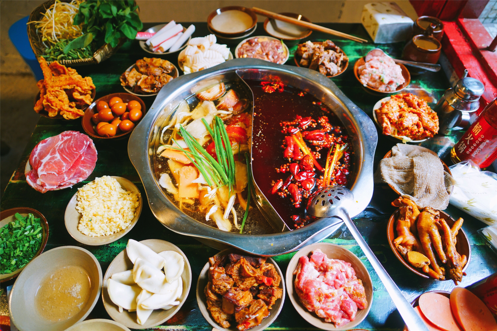
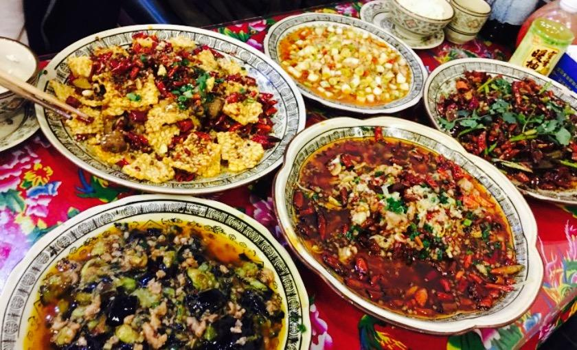
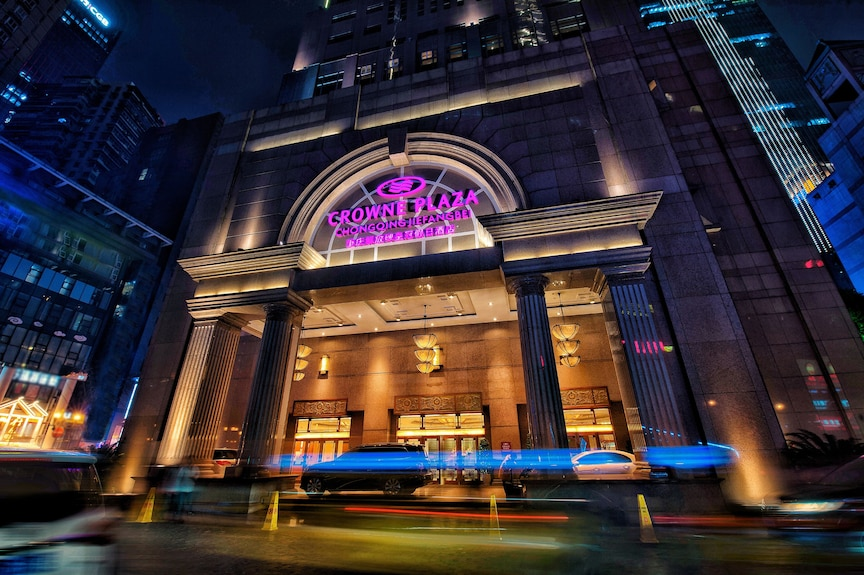
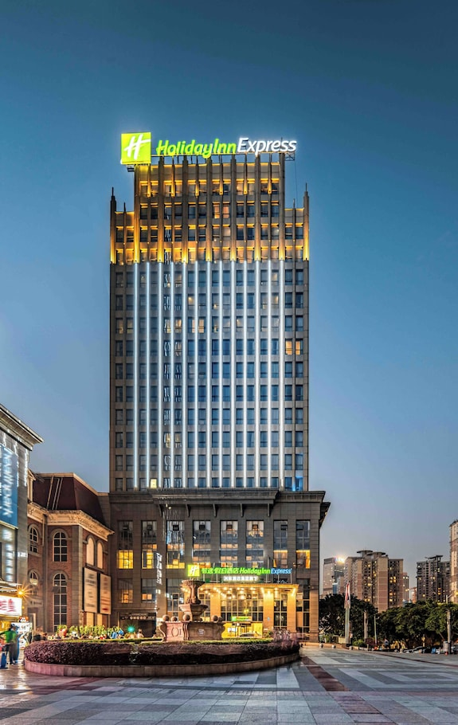

重庆3日游攻略概述
山城重庆的特色亮点
气候与人流情况
行程规划与路线安排
Day 1：渝中半岛经典之旅
时间安排
交通指南
- 解放碑步行至湖广会馆约15分钟
- 长江索道连接解放碑和南岸
- 从南山到洪崖洞建议打车（约25分钟）
Day 2：文青与城市探索
Day 3：古镇与老街探秘
重庆交通出行全攻略
重庆作为一座立体山城，其交通系统独具特色。2025年国庆期间，游客将体验到轨道交通、穿楼轻轨、长江索道等多样化的出行方式。提前了解交通规则和出行技巧，能让您的重庆之旅更加顺畅和愉快。
机场/火车站到市区
- 江北机场：10号线直达市区(6:30-23:30)，约40分钟，票价2-5元
- 机场大巴：K01线至解放碑，15元，15-20分钟一班
- 出租车：白天10元起价，到市中心50-70元
- 重庆北站：地铁3号线、10号线，公交202/612路
- 重庆西站：地铁环线，可换乘1/2/3号线
轻轨地铁系统
- 线路概况：2025年10条线路，总长超400公里
- 核心线路：1号线、2号线(穿楼轻轨)、3号线
- 运营时间：多数6:30-23:00，核心线路至23:30
- 票价信息：起步价2元(6公里内)，最高7元
- 换乘优惠：1小时内换乘优惠1元
- 推荐应用：使用"重庆公共交通乘车码"
特色交通工具
长江索道
- 国庆运营：7:30-23:00(需提前3天预约)
- 票价：单程20元，往返30元
- 最佳体验：傍晚观赏夜景
两江小渡
- 航线：朝天门-江北嘴/洪崖洞-弹子石
- 国庆运营：8:00-18:30
- 票价：单程10元，含讲解套票20元
穿楼轻轨
- 李子坝站穿楼而过，世界奇观
- 最佳拍摄点：李子坝站1楼观景台
- 避开早晚高峰，观赏效果更佳
出行建议与技巧
节假日提示
- 提前3天预约热门交通工具
- 避开早晚高峰(7:30-9:00, 17:00-19:00)
- 下载"重庆公共交通乘车码"APP
山城出行技巧
- 穿舒适平底鞋
- 使用导航APP查看3D路线
- 短途可考虑网约车(价格与出租车相近)
推荐使用"重庆公共交通乘车码"
一部手机畅游重庆，支持地铁、公交、索道等多种交通工具
精选景点详细介绍

洪崖洞
历史文化
- 复原明清时期吊脚楼建筑群，展现巴渝传统民居特色[158]
- 11层立体山城建筑，被誉为现实版"千与千寻"场景
实用信息
- 位置：重庆市渝中区嘉陵江滨江路88号
- 开放时间：核心区9:00-23:00（2025年最新）
- 门票：免费（特殊展览另行收费）
- 建议游玩时间：2-3小时
国庆特供建议
- 最佳观景时间：19:30-22:30（灯光秀）
- 推荐路线：从11楼进入，由上往下游览更轻松
- 避峰时段：12:00-14:00或20:00后人流较少

李子坝轻轨站
特色亮点
- 全球罕见的"轻轨穿楼"奇观，展现山城立体交通智慧
- 最佳拍摄点：观景平台（正对穿楼位置）
实用信息
- 位置：轨道2号线李子坝站
- 开放时间：6:30-22:30（与轻轨运营同步）
- 门票：免费
国庆建议
- 推荐时段：工作日早10点前或下午4点后
- 隐藏路线：可乘2号线到佛图关站步行前往
长江索道
文化价值
- 1987年建成，重庆第一条跨江索道[166]
- "空中公交"全长1166米，横跨长江两岸
实用信息
- 位置：渝中区新华路153号（北站）/南岸区上新街（南站）
- 运营时间：7:30-21:30（国庆可能延长）
- 票价：单程20元/往返30元（建议提前网购）
体验建议
- 最佳时段：傍晚可欣赏两岸璀璨夜景
- 推荐路线：从南站出发人流量通常较少

景点游览小贴士
重庆地形复杂，建议穿着舒适防滑的鞋子
景点间距离较远，手机电量要充足
重庆湿热，随身携带饮用水和防晒用品
重庆美食指南与推荐餐厅
重庆特色美食概览
重庆火锅
麻辣鲜香，牛油锅底搭配数十种香料
- 老火锅、新派火锅、清油火锅、九宫格火锅
- 推荐涮品：毛肚、黄喉、鸭血、鲜切牛肉
江湖菜
粗犷豪放、麻辣鲜香、分量十足
- 代表菜品：辣子鸡、毛血旺、水煮鱼
- 特色风味：酸菜鱼、黔江鸡杂
重庆小面
面条筋道，麻辣鲜香的调味汁
- 品种丰富：豌杂面、牛肉面、肥肠面
- 地道风味：担担面等经典面食
酸辣粉
酸辣开胃，红薯粉条Q弹
- 制作工艺：配菜丰富，辣椒油和醋调味
- 街头美味：最具代表性的重庆小吃

推荐餐厅精选
瓜西西火锅
人均：80-120元解放碑店、洪崖洞店、较场口店
招牌菜
- 鱼籽虾滑
- 特色三拼(毛肚/黄喉/鸭肠)
- 手工老肉片
特色
- 九宫格锅底
- 部分分店有观光区域
洋马儿火锅
人均：75-110元观音桥店、南坪万达店
招牌菜
- 屠场鲜毛肚
- 鲜切牛肉
- 醪糟冰汤圆
特色
- 传统火锅环境
- 多种锅底选择
清风笑酒号
人均：120-180元上清寺主店、北滨路分店
招牌菜
- 干锅系列
- 川式凉菜
- 自酿酒水
特色
- 环境优雅
- 适合聚会
江湖菜代表展示

特色小吃街区
渝中区
-
解放碑八一路好吃街
酸辣粉、山城小汤圆
-
洪崖洞美食街
毛血旺、担担面
沙坪坝区
-
磁器口古镇小吃街
陈麻花、糍粑
江北区
-
观音桥美食街
麻辣烫、串串香
国庆用餐建议
预约须知
- 热门餐厅提前1-2周预约
- 特色景观餐厅提前锁定临江位
- 通过大众点评/美团/餐厅公众号预约
错峰用餐
- 午餐11:00前/13:30后
- 晚餐17:00前/20:00后
特别提醒
- 部分老字号不接受预约
- 确认预约信息并提前到达
- 注意餐厅取消政策
住宿选择与预订建议
重庆的住宿选择丰富多样，从江景高端酒店到文艺民宿应有尽有。国庆期间酒店价格普遍上涨，建议提前规划并选择合适区域，既能享受舒适住宿又能控制预算。

解放碑区域（交通最便利）
NASATING·纳斯汀高空江景酒店
- 国庆价格：588元/晚（平日428元）
- 41层高空观景台，270°江景房，智能家居系统
- 步行至解放碑8分钟，距地铁小什字站200米
- 评分：4.9/5（景观项满分）
千合璞仕度假酒店
- 国庆价格：518元/晚（平日368元）
- 民国风设计，屋顶花园茶室，免费接送至洪崖洞
- 每日15:00-17:00免费茶艺表演
- 亲子友好：提供儿童洗漱包+床围栏

观音桥区域（性价比之选）
亚朵酒店(观音桥店)
- 国庆价格：558元/晚（平日398元）
- 免费夜宵、延迟退房至15点
- 距地铁9号线蚂蝗梁站200米
北仓文创民宿
- 国庆价格：368元/晚
- 老厂房改造文艺空间，安静环境
- 评分：4.8/5（环境项突出）
2025年国庆价格波动预测
| 酒店类型 | 平日均价 | 国庆均价 | 涨幅 |
|---|---|---|---|
| 经济型 | 180元 | 270元 | +50% |
| 中高端 | 550元 | 770元 | +40% |
| 豪华型 | 1200元 | 1800元 | +50% |
预订策略
- 最佳预订时间：7月底至8月初（提前60天）
- 省钱技巧：连住3晚以上可享9折，官方渠道预订比OTA平台便宜5-10%
- 套餐优惠：关注含景点门票的套餐
- 位置选择：优先地铁1/6号线沿线酒店，推荐小什字站、临江门站周边
各区域对比
| 区域 | 优势 | 适合人群 | 价格区间 |
|---|---|---|---|
| 解放碑 | 景点集中，夜景美 | 首次游客 | 500-2000元 |
| 观音桥 | 购物方便，夜生活丰富 | 年轻人 | 300-800元 |
| 江北嘴 | 商务环境，江景房多 | 商务客 | 600-1500元 |
实用贴士与注意事项
安全注意事项
- 解放碑、洪崖洞等人流密集区请保管好贵重物品，避免显露现金
- 22:00后建议结伴出行，避免独自前往偏僻巷道
- 选择有卫生评级的餐厅，火锅建议从"微辣"开始尝试
天气与穿着建议
2025年10月重庆气温约18-28℃，昼夜温差大：
- 白天：薄外套+T恤
- 晚间：稍厚外套
- 必备防滑平底鞋（多山路阶梯）
行李清单
必备物品
- 身份证/学生证
- 现金200-300元
- 充电宝(≤2万毫安)
药品准备
- 肠胃药
- 晕车药
- 创可贴
紧急联系方式
急救：120
报警：110
旅游投诉：023-12301
主要医院:
重医附一院: 023-89012222
市急救中心: 023-63692222
国庆特别提醒
人流高峰期
- 10月1日-3日为高峰
- 避开10:00-16:00热门景点
- 长江索道等需提前预约
- 关注「渝快办」APP查看实时人流
交通管制
- 渝中区核心路段8:00-20:00可能限行
- 优先使用轻轨1、2、6号线
- 建议下载"车来了"查询公交
实用APP推荐
重庆市民通
交通+预约
渝畅行
轻轨过闸
车来了
公交查询
重庆WIFI
2000+热点